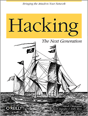

I just finished reading two electronic books I bought from O’reilly. Here is a short review on them.
Hacking: the next generation

The purpose of this book is to give to the readers an overview of the most common attacks nowadays. It covers all fields : social engineering, web attacks, networking, etc.
It was easy to read : the authors are straight to the point and their sentences are clear.
I especially appreciated their state of art about XSS and CSRF attacks. It is certainly the best I have read so far, greatly illustrated with exciting and real case studies.
On the other hand, I quickly passed over the networking stuff (both wired and wireless). It was too basic and didn’t show anything new – maybe it is because I specialize in those fields.
Anyway, globally, I strongly recommend this book. It is worth while your money if you want to know more on web attacks or to have a good overview of modern threats.
Beautiful Security
This is a collection of essays by some of the best security experts and hackers.
Well, I won’t go around, I have been quite disappointed by this book. The overall lacks coherence and after a while you start wondering what this book is trying to demonstrate. At the end, there is a crual lack of connection between the essays and it globally makes it appear very confusing.
It also sometimes lacks technical references and the writing style is too verbose, too literal for a technical book to be attractive.
There are however some good essays, like one about PGP (by Philip Zimmermann himself, though). It is hard to find some good and complete documentation about it, and this essay is definitely a good one, which I will probably read again when I feel the need of it.
But I wouldn’t recommend this book only for this short piece of writing. Lack of cohesion, too much litterature and not enough technical stuff actually bored me, though that’s just my personal taste.